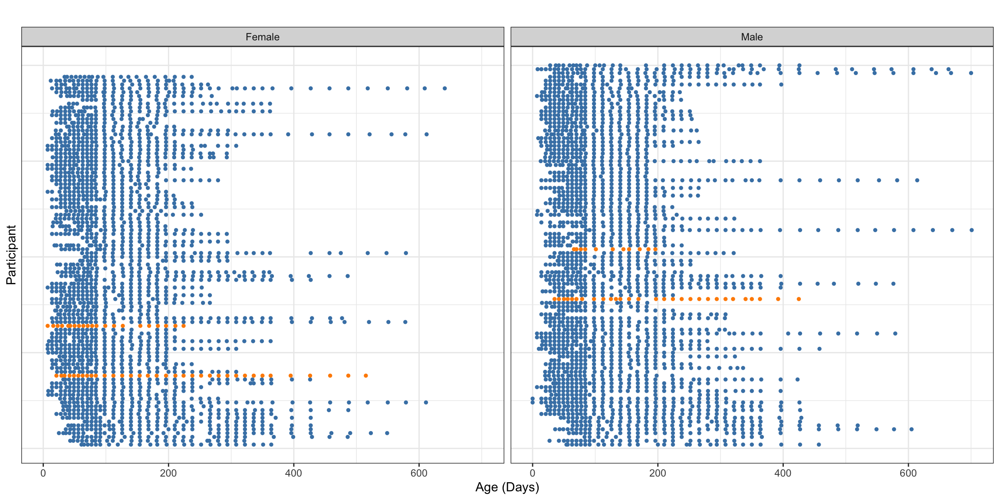
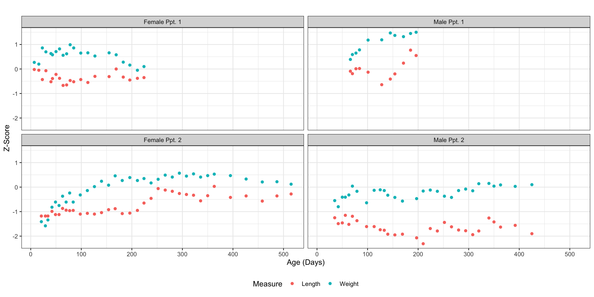
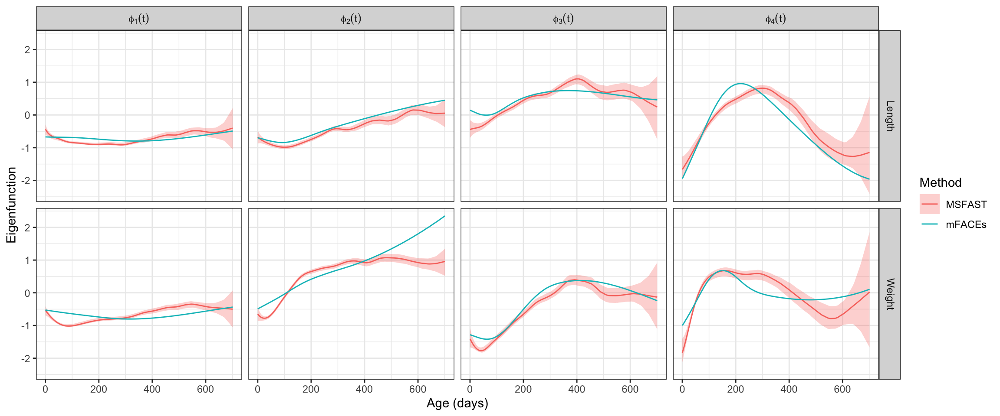
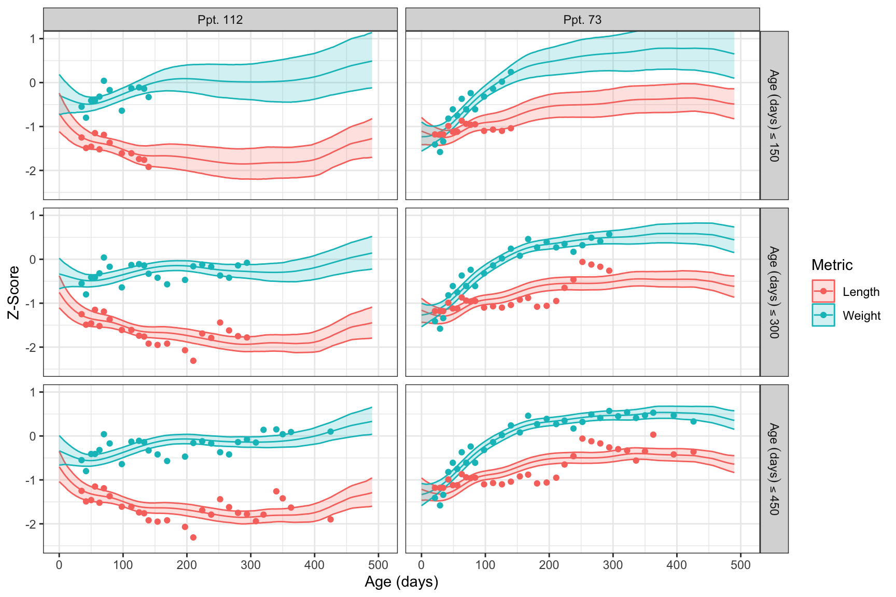

# General helper functions
source("MSFAST_support/Libs.R")
source("MSFAST_support/Bases.R")
source("MSFAST_support/PostProcess.R")
source("MSFAST_support/Convergence.R")
# Supporting functions for MSFAST
source("MSFAST_support/MSFAST_Help.R")
source("MSFAST_support/Resample_Scores.R")MSFAST: Bayesian Multivariate, Sparse FPCA Vignette
Read in the CONTENT Child Growth Data
For this vignette, we analyze a subset (\(N = 197\)) of child growth data from the CONTENT study as included in the “refund” package. As part of CONTENT, multiple growth measures were taken at the same time for each participant and sparsely across individuals.
CONTENT was conducted between May 2007 and February 2011 in Las Pampas de San Juan Miraflores and Nuevo Paraíso, two peri-urban shanty towns located on the southern edge of Lima City in Peru. The shanty towns had approximately \(40{,}000\) residents with \(25\)% of the population under the age of \(5\) (W. Checkley et al. 1998; William Checkley et al. 2003).
A simple census was conducted to identify pregnant women and children less than \(3\) months old. Eligible newborns and pregnant women were randomly selected and invited to participate in the study (at most one newborn per household). The longitudinal cohort study aimed to assess whether Helicobacter pylori (H. pylori) infection adversely affects the growth in children less than \(2\) years of age (Jaganath et al. 2014; Crainiceanu et al. 2024).
The study aimed to collect measures weekly until the child was \(3\) months old, biweekly between \(3\) and \(11\) months, and once monthly afterwards. Some visits were missed or canceled, contributing to the sparse data structure.
We read in the data using standard Tidyverse syntax, focusing on the length and weight z-scores relative to the age- and sex-specific World Health Organization standards.
data(content)
content = content %>%
select(id, ma1fe0, agedays, zlen, zwei)Visualization of the Sparse Structure
We now visualize the observation times by gender for the entire dataset and the observed data for four participants (two randomly chosen and two chosen for holdout to illustrate dynamic prediction). These visualizations borrow strongly from the section in “Functional Data Analysis with R” on sparsely observed functional data, which includes discussion of the CONTENT dataset. The first visualization aims to illustrate the general structure of the sparsity in observations.
set.seed(37578) # Essential for reproducibility
for_prediction = c(73, 112) # Participants for dynamic prediction
vis_ppts = c(sample(unique(content %>% filter(ma1fe0 == 0) %>% pull(id)), 1),
for_prediction[1],
sample(unique(content %>% filter(ma1fe0 == 1) %>% pull(id)), 1),
for_prediction[2])
content %>%
select(id, ma1fe0, agedays) %>%
mutate(Gender = case_when(ma1fe0 == 1 ~ "Male",
TRUE ~ "Female")) %>%
group_by(Gender, id) %>%
nest(data = agedays) %>%
ungroup() %>%
group_by(Gender) %>%
mutate(pptid = row_number()) %>%
ungroup() %>%
unnest(data) %>%
mutate(coloring = case_when(id %in% vis_ppts ~ "Observed",
TRUE ~ "Excluded")) %>%
ggplot(aes(x = agedays, y = pptid)) +
geom_point(aes(color = coloring), size = 1) +
theme_bw() +
facet_wrap(.~Gender) +
scale_color_manual(values = c("Observed" = "darkorange",
"Excluded" = "steelblue")) +
labs(x = "Age (Days)", y = "Participant", title = "") +
theme(axis.text.y = element_blank(),
axis.ticks.y = element_blank(),
legend.position = "none")
Focusing on just four participants, two of each gender highlighted in the above observations plot, we can better visualize the actual bivariate patterns within the data.
labs = c(paste0(c("Female", "Male"), " Ppt. 1"),
paste0(c("Female", "Male"), " Ppt. 2"))
content %>%
filter(id %in% vis_ppts) %>%
mutate(new_id = case_when(id == vis_ppts[1] ~ labs[1],
id == vis_ppts[2] ~ labs[3],
id == vis_ppts[3] ~ labs[2],
TRUE ~ labs[4]),
new_id = factor(new_id, levels = labs)) %>%
select(new_id, id, agedays, zlen, zwei) %>%
pivot_longer(-c(new_id, id, agedays), names_to = "Measure", values_to = "Y") %>%
mutate(Measure = case_when(Measure == "zlen" ~ "Length",
TRUE ~ "Weight")) %>%
ggplot(aes(x = agedays, y = Y, group = Measure, color = Measure)) +
geom_point() +
facet_wrap(.~new_id, ncol = 2) +
theme_bw() +
labs(x = "Age (Days)", y = "Z-Score", title = "") +
theme(legend.position = "bottom")
Fitting MSFAST
We first remove two participants from the dataset that will be used to fit the model. We will illustrate dynamic prediction using the data from these participants later.
content_fit = content %>%
filter(!(id %in% for_prediction)) %>%
select(-c(ma1fe0))
content_predict = content %>%
filter(id %in% for_prediction) %>%
select(-c(ma1fe0)) %>%
rename(Arg = agedays)At this point, we form the input data list required by MSFAST, described in the “Bayesian implementation in STAN” section of the manuscript.
# Pivot to long and adjust names
fit_df = content_fit %>%
pivot_longer(-c(id, agedays),
names_to = "Covar",
values_to = "Y") %>%
mutate(Var = case_when(Covar == "zlen" ~ 1, # Replace names with indices
TRUE ~ 2)) %>%
select(-c(Covar)) %>%
reset_id() %>% # Reset participant ids to sequential integers
rename(Subj = id, Arg = agedays)
# Find observation time indices S and append
S_df = data.frame(Arg = sort(unique(fit_df$Arg)))
S_df$S = 1:nrow(S_df)
fit_df = inner_join(fit_df, S_df, by = "Arg")
content_predict = inner_join(content_predict, S_df, by = "Arg")
# Translate domain to (0, 1)
domain = S_df$Arg
scaled_domain = (domain - min(domain)) / (max(domain) - min(domain))
N = n_distinct(fit_df$Subj) # Number of participants
Q = 20 # Spline basis dimension
K = 4 # Number of principal components
P = n_distinct(fit_df$Var) # Number of unique covariates (2 here)
# Function to coalesce inputs (basis is orthogonalized B-splines by default)
data_list = MSFAST_datalist(fit_df, N = N, K = K, Q = Q, scaled_domain,
scale = T)We can finally fit the model using RSTAN as follows.
fit_joint = stan("MSFAST_support/MSFAST.stan",
data = data_list,
chains = 4,
cores = 4,
warmup = 2000,
iter = 3000,
control = list(max_treedepth = 12))Note that the above block does not leverage parallelization over covariates through multithreading. To leverage this computational speed-up (after ensuring sufficient available resources), one can use “Sys.setenv(STAN_NUM_THREADS=X)” for \(\text{X} > 1\) and the parallelized STAN implementation.
Evaluating Fit and Aligning Results
We first fit mFACEs, extracting the estimates provided by this method to be used as our fixed point \(\widetilde{\boldsymbol{\Phi}}\) for the Procrustes-based alignment of posterior FPC samples described in the manuscript.
# Data in list format
face_data = list(content %>%
filter(!(id %in% for_prediction)) %>%
select(agedays, id, zlen) %>%
rename(argvals = agedays,
subj = id, y = zlen),
content %>%
filter(!(id %in% for_prediction)) %>%
select(agedays, id, zwei) %>%
rename(argvals = agedays,
subj = id, y = zwei))
# Call to function
face_fit = mface.sparse(face_data, argvals.new = domain, knots = Q-3,
knots.option = "quantile", pve = 0.999)
# Extract first K FPC estimates as fixed point matrix
phi_tilde = face_fit$eigenfunctions[,1:K] We next check the Gelman-Rubin statistics for all relevant model components (after alignment). This is done automatically using the “RHat_FAST()” function as follows. This function calculates the median and max RHat observed for each FPC/covariate grouping within parameter families. The results below indicate that all parameters have converged according to the heuristic RHat < 1.05 threshold.
rhats = RHat_FAST(fit_joint, # RSTAN object
data_list, # List of constants
data_list$B, # Orthogonal spline basis matrix
phi_tilde) # Fixed point for rotational alignment
# Scores, grouped by FPC
rhats$Score# A tibble: 4 × 3
FPC_Num Med_RHat Max_RHat
<chr> <dbl> <dbl>
1 FPC 1 1.02 1.04
2 FPC 2 1.00 1.01
3 FPC 3 1.00 1.01
4 FPC 4 1.00 1.02# FPCs, grouped by FPC/functional component
rhats$Func# A tibble: 5 × 3
Function Med_RHat Max_RHat
<chr> <dbl> <dbl>
1 FPC 1 1.00 1.01
2 FPC 2 1.00 1.00
3 FPC 3 1.00 1.02
4 FPC 4 1.01 1.03
5 Mu 1.00 1.00# Fixed effect smoothing parameters, grouped by covariate
rhats$Mu_Smoothing Function RHat
1 Mu1 1.001001
2 Mu2 1.001592# FPC smoothing parameters, grouped by FPC and covariate
rhats$FPC_Smoothing# A tibble: 8 × 3
Var FPC RHat
<chr> <chr> <dbl>
1 Var 1 FPC 1 1.02
2 Var 1 FPC 2 1.01
3 Var 1 FPC 3 1.00
4 Var 1 FPC 4 1.00
5 Var 2 FPC 1 1.00
6 Var 2 FPC 2 1.01
7 Var 2 FPC 3 1.01
8 Var 2 FPC 4 1.00# Variance components, no grouping
rhats$Variances Element RHat
1 Lambda_1 1.000116
2 Lambda_2 1.001444
3 Lambda_3 1.007298
4 Lambda_4 1.027927
5 Sigma2 1.000165We can extract and align the posterior samples, leveraging the Procrustes-based procedure described in the manuscript, using the provided suite of post-processing functions as follows.
# Can adjust the observation points at which inference is performed
basis_mat = FAST_B("B", Q, scaled_domain)
# Extract FPCs, corresponding weights, fixed effect weights, and scores
objects = FAST_extract(fit_joint, basis_mat, data_list)
# Align samples using Procrustes-based procedure
align = procrust_WEI(objects$Weights, basis_mat, P, phi_tilde, objects$Score)
# Extract FPC estimates and credible intervals
EF_ests = FPC_Est_WEI(align$Weight, basis_mat, P, domain, phi_tilde)
EF_bounds = FPC_CI(align$EF, domain, P)We next evaluate the proportion of global variability explained to ensure the number of FPCs \(K\) was chosen appropriately. The final values are above 95% for all samples, seeming to indicate that \(K = 4\) is sufficient for this data.
# True data in sparse matrix form
data_matrix = fit_df %>%
pivot_wider(names_from = Subj, values_from = Y) %>%
arrange(Var, Arg) %>%
select(-c(Var, Arg, S)) %>%
as.matrix() %>%
t()
mask = is.na(data_matrix)
data_var = var(data_matrix[!mask])
# Modeled smooths in sparse matrix of dim. samples x ppts x obs
samples_matrix = Smooth_Raw(objects$Mu, align$EF, align$Score, data_list)
n_samp = dim(samples_matrix)[1]
var_expl = rep(0, n_samp)
for (j in 1:n_samp) {
model_matrix = samples_matrix[j, , ]
resids = data_matrix - model_matrix
var_expl[j] = 1 - var(resids[!mask]) / data_var # 1 - RSS/TSS across covariates
}
# Summarize global variance explained over posterior samples
summary(var_expl) Min. 1st Qu. Median Mean 3rd Qu. Max.
0.9501 0.9509 0.9511 0.9511 0.9512 0.9520 Visualizing Multivariate FPCs
We now visualize the multivariate FPCs according to MSFAST. All estimates are accompanied by the associated equal-tailed 95% credible intervals. For a point of reference, we also include the FPC estimates from mFACEs, though these estimates do not include any uncertainty quantification.
# Format MSFAST estimates
{
MSFAST_FPC = left_join(EF_bounds, EF_ests %>% rename(Func = FPC_Val)) %>%
mutate(FuncName = paste0("phi[", substring(FPC_Num, 5), "](t)")) %>%
mutate(Method = "MSFAST",
Method = factor(Method, levels = c("MSFAST", "mFACEs")),
Covar = case_when(Var == 1 ~ "Length",
TRUE ~ "Weight"))
}Joining with `by = join_by(Arg, Var, FPC_Num)`# Format mFACEs estimates for comparison
{
FACE_FPC = data.frame(phi_tilde)
colnames(FACE_FPC) = paste0("phi[", 1:K, "](t)")
FACE_FPC$Arg = rep(face_fit$argvals.new, 2)
FACE_FPC$Covar = rep(c("Length", "Weight"), each = length(face_fit$argvals.new))
FACE_FPC = FACE_FPC %>%
pivot_longer(-c(Arg, Covar), names_to = "FuncName", values_to = "FACE") %>%
mutate(Method = "mFACEs",
Method = factor(Method, levels = c("MSFAST", "mFACEs")))
}
# Visualize the results
{
MSFAST_FPC %>%
ggplot(aes(x = Arg, color = Method, fill = Method)) +
geom_ribbon(aes(ymin = LB, ymax = UB), linewidth = 0, alpha = 0.3) +
geom_line(aes(y = Func)) +
geom_line(data = FACE_FPC, aes(y = FACE)) +
facet_grid(Covar~FuncName, labeller = label_parsed) +
theme_bw() +
labs(x = "Age (days)", y = "Eigenfunction")
}
We can also examine the eigenvalue posterior distributions for each of the FPCs estimated above, summarized with corresponding credible intervals in the following table. Again, we use the results from mFACEs for comparison.
# MSFAST eigenvalues from score variances
MSFAST_EV = map(align$Score, function(x) {
ev_sample = apply(x, 2, var)
return(data.frame(
FPC = paste0("Phi_", 1:K, "(t)"),
EV = ev_sample
))
}) %>% list_rbind() %>%
group_by(FPC) %>%
summarize(`Posterior Mean Lambda` = round(mean(EV), 2),
`CI Lower` = round(quantile(EV, probs = c(0.025)), 2),
`CI Upper` = round(quantile(EV, probs = c(0.975)), 2))
# mFACEs eigenvalues from model output
FACE_EV = data.frame(FPC = paste0("Phi_", 1:K, "(t)"),
EV = round(face_fit$eigenvalues[1:K], 2)) %>%
rename(`mFACEs Lambda` = EV)
inner_join(MSFAST_EV, FACE_EV, by = "FPC")# A tibble: 4 × 5
FPC `Posterior Mean Lambda` `CI Lower` `CI Upper` `mFACEs Lambda`
<chr> <dbl> <dbl> <dbl> <dbl>
1 Phi_1(t) 1.46 1.37 1.55 1.37
2 Phi_2(t) 0.24 0.21 0.27 0.35
3 Phi_3(t) 0.18 0.16 0.21 0.1
4 Phi_4(t) 0.2 0.14 0.28 0.04As can be seen above, MSFAST does not agree with mFACEs on the variability explained in the later FPCs, particularly \(\boldsymbol{\Phi}_3(t)\) and \(\boldsymbol{\Phi}_4(t)\). Given the tendency of MSFAST to better recover lower signal FPCs, this descrepancy is likely cause for re-ordering of the FPCs during visualization.
Dynamic Prediction
We aim to predict the latent trajectories for the two held-out participants. We iteratively update predictions using these subjects’ data observed up to 150, 300, and 450 days, mimicking the dynamic prediction task. In all cases, we limit trajectory predictions to 500 days, as there is little data to draw from past this point. To form these predictions, we will need to first define relevant constants.
# Predict using data up to 150, 300, and 450 days
thresholds = 1:3 * 150
# Predict trajectory only up to 500 days
max_project = 500
# Object containing posterior samples
samples = extract(fit_joint)
# Basis matrix for FPCs when P = 2
kB = kronecker(diag(P), basis_mat)
# Number of unique observed time points
M = nrow(basis_mat)We can now actually form the trajectory predictions by sampling the subject-specific scores given their available data and the posterior samples of the population-level parameters.
trajectories = map(thresholds, function(age_thresh) { # Predictions at each threshold
sub_traj = map(for_prediction, function(sid) { # Predictions for each participant
# Reformat data and standardize
subset = content_predict %>%
filter(Arg <= age_thresh & id == sid) %>%
pivot_longer(-c(id, Arg, S), names_to = "Metric", values_to = "Val") %>%
mutate(Var = case_when(Metric == "zlen" ~ 1,
TRUE ~ 2)) %>%
left_join(data_list$consts, by = "Var") %>%
mutate(Val = (Val - mu_Y) / sd_Y)
# Structure observations
Yi = list(length = subset %>%
filter(Metric == "zlen") %>%
pull(Val),
weight = subset %>%
filter(Metric == "zwei") %>%
pull(Val))
# Orthogonal spline evaluated at the observed points
Bi = list(length = basis_mat[subset %>% filter(Metric == "zlen") %>% pull(S), ],
weight = basis_mat[subset %>% filter(Metric == "zwei") %>% pull(S), ])
# Sample the scores conditional on population estimates and available data
scores = sample_scores(Yi, Bi, samples) %>%
select(-c(Sample)) %>%
as.matrix()
# Calculate trajectories from sampled scores and population-level samples
person_traj = map(1:dim(scores)[1], function(x) {
smooths = kB %*% (samples$w_mu[x,] + samples$Psi[x, , ] %*% scores[x, ])
return(data.frame(Sample = x, Arg = domain,
zlen = smooths[1:M],
zwei = smooths[(M + 1):(2 * M)]))
}) %>% list_rbind() %>%
pivot_longer(-c(Arg, Sample),
names_to = "Metric",
values_to = "Traj")
return(person_traj %>% mutate(id = sid))
}) %>% list_rbind() %>%
filter(Arg <= max_project) %>% # Only project to 500 days
mutate(Metric = case_when(Metric == "zlen" ~ "Length",
TRUE ~ "Weight"))
return(
sub_traj %>% # Summarize trajectories by point-wise mean and credible intervals
group_by(id, Metric, Arg) %>%
summarize(Est = mean(Traj),
UB = quantile(Traj, probs = c(0.975)),
LB = quantile(Traj, probs = c(0.025))) %>%
mutate(id = paste0("Ppt. ", id)) %>%
mutate(Data_Max = paste0("Age~(days)<=", age_thresh))
)
}) %>%
list_rbind()To conclude formatting these predictions, we scale them according to the mean and standard deviation of the observed measures and arrange the thresholds for viewing.
trajectories = trajectories %>%
mutate(Var = case_when(Metric == "Length" ~ 1,
TRUE ~ 2)) %>%
left_join(data_list$consts, by = "Var") %>%
mutate(Est = Est * sd_Y + mu_Y,
UB = UB * sd_Y + mu_Y,
LB = LB * sd_Y + mu_Y) %>%
select(-c(Var)) %>%
mutate(Data_Max = factor(Data_Max, levels = paste0("Age~(days)<=", thresholds)))We next format the raw data for visualization alongside the predicted trajectories.
# Corresponding real data
real_data = map(thresholds, function(age_thresh) {
return(
content_predict %>%
filter(Arg <= age_thresh) %>%
pivot_longer(-c(id, Arg, S), names_to = "Metric", values_to = "Val") %>%
mutate(
id = paste0("Ppt. ", id),
Metric = case_when(Metric == "zlen" ~ "Length",
TRUE ~ "Weight"),
Data_Max = paste0("Age~(days)<=", age_thresh)
)
)
}) %>%
list_rbind() %>%
mutate(Data_Max = factor(Data_Max, levels = paste0("Age~(days)<=", thresholds)))We can finally visualize the predictions with the data used to form them, with projected trajectories and their uncertainty shifting with the introduction of additional data. Perhaps most noticeably, the credible interval width decreases substantially as more data is included.
trajectories %>%
ggplot(aes(x = Arg, group = Metric, color = Metric, fill = Metric)) +
geom_line(aes(y = Est)) +
geom_ribbon(aes(ymin = LB, ymax = UB), alpha = 0.2) +
geom_point(data = real_data, aes(y = Val)) +
theme_bw() +
scale_x_continuous(lim = c(0, 505)) +
coord_cartesian(ylim = c(-2.5, 1)) +
facet_grid(Data_Max ~ id,
labeller = labeller(Data_Max = label_parsed),
scales = "free_y") +
labs(x = "Age (days)", y = "Z-Score")
This document just visualizes a particular case of applying the “MSFAST” approach to perform fully-Bayesian Functional PCA for sparse, multivariate data. All supporting STAN and R code here is designed to be flexible, such that it may directly be applied to any other similarly structured problem.
References
Checkley, W., L. D. Epstein, R. H. Gilman, R. E. Black, L. Cabrera, and C. R. Sterling. 1998. “Effects of Cryptosporidium Parvum Infection in Peruvian Children: Growth Faltering and Subsequent Catch-up Growth.” American Journal of Epidemiology 148 (5): 497–506. https://doi.org/10.1093/oxfordjournals.aje.a009675.
Checkley, William, Leonardo D. Epstein, Robert H. Gilman, Lilia Cabrera, and Robert E. Black. 2003. “Effects of Acute Diarrhea on Linear Growth in Peruvian Children.” American Journal of Epidemiology 157 (2): 166–75. https://doi.org/10.1093/aje/kwf179.
Crainiceanu, Ciprian M., Jeff Goldsmith, Andrew Leroux, and Erjia Cui. 2024. Functional Data Analysis with R. Chapman; Hall/CRC.
Jaganath, Devan, Mayuko Saito, Robert H. Gilman, Dulciene M. M. Queiroz, Gifone A. Rocha, Vitaliano Cama, Lilia Cabrera, et al. 2014. “First Detected Helicobacter Pylori Infection in Infancy Modifies the Association Between Diarrheal Disease and Childhood Growth in Peru.” Helicobacter 19 (4): 272–79. https://doi.org/10.1111/hel.12130.